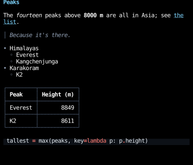
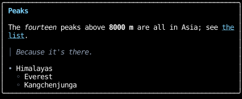
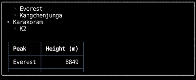
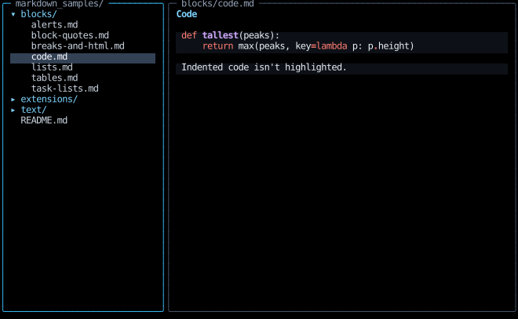
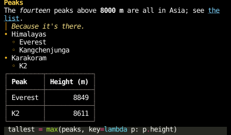

Markdown
markdown_document renders a Markdown document as a component,
which goes anywhere a component does.
It handles GitHub Flavored Markdown,
and YAML front matter at the top of a document.
README = """\
# Peaks
The *fourteen* peaks above **8000 m** are all in Asia;
see [the list](https://en.wikipedia.org/wiki/Eight-thousander).
> Because it's there.
- Himalayas
- Everest
- Kangchenjunga
- Karakoram
- K2
| Peak | Height (m) |
|:-----|-----------:|
| Everest | 8849 |
| K2 | 8611 |
```python
tallest = max(peaks, key=lambda p: p.height)
```
"""
@component
def root() -> Div:
return Div(style=col | pad_x(1), children=(markdown_document(README),))

Peaks
The fourteen peaks above 8000 m are all in Asia; see the
list.
│ Because it's there.
• Himalayas
◦ Everest
◦ Kangchenjunga
• Karakoram
◦ K2
┌─────────┬────────────┐
│ Peak │ Height (m) │
├─────────┼────────────┤
│ Everest │ 8849 │
├─────────┼────────────┤
│ K2 │ 8611 │
└─────────┴────────────┘
tallest = max(peaks, key=lambda p: p.height)
- Links, bare URLs, and images are hyperlinks to their destinations. An image is shown as its alt text, since a terminal can't show the image.
- Fenced code blocks are highlighted as the language their info string names, or shown as written if it names none, or one Pygments doesn't know. Code blocks and tables too wide for the space they're given scroll sideways.
- Math, between
$s within a line or$$s on lines of their own, is shown as written, since a terminal can't typeset it. A dollar sign starts math only by Pandoc's rule, with no space just inside it and no digit right after the closing one, so$5 and $10stays text. - Raw HTML is shown as written.
GitHub's extensions to CommonMark draw like this:
EXPEDITION = """\
---
peak: K2
---
- [x] Reach base camp
- [ ] Summit, weather permitting[^window]
> [!WARNING]
> Bottlenecks form above camp four.
Forecasts are at www.mountain-forecast.com.
[^window]: Usually in late July.
"""
@component
def github() -> Div:
return Div(style=col | pad_x(1), children=(markdown_document(EXPEDITION),))
- Front matter is shown dimmed and highlighted as YAML.
Pass
MarkdownStyles(front_matter=display_none)to hide it. - A task list item's box takes the place of its bullet, or follows its number.
- An alert is a block quote with a title, colored by its kind.
- Footnotes are numbered in the order they're referenced, and their definitions follow the rest of the document.
Parsing
markdown_document is a memo component,
so it parses its document again only when its arguments change,
and keeps what it rendered while it stays mounted, freed when it unmounts.
A transcript that renders each message with one parses only the message that changed,
however many messages there are, as React apps wrap a Markdown component in React.memo.
The function it calls, markdown, returns the document's Div of elements, and parses the document each time it's called.
Call it to put the elements together with others yourself,
under use_memo in a component that renders often.
Scrolling
A document is as tall as its content, so one longer than the space it's given runs past the bottom of it.
Put it in a scroll container, as a browser puts a page in a scrolling viewport,
with scroll_on_keys and scroll_on_wheel to scroll it:
@component
def scrolling() -> Div:
# Focused, so the keys reach scroll_on_keys.
use_focus(auto_focus=True)
return Div(
style=col | full | border | border_lightrounded | pad_x(1) | overflow_y_scroll,
on_input=first(scroll_on_keys(), scroll_on_wheel()),
children=(markdown_document(README),),
)


╭──────────────────────────────────────────────────────────╮
│ ◦ Everest │
│ ◦ Kangchenjunga │
│ • Karakoram │
│ ◦ K2 │
│ │
│ ┌─────────┬────────────┐ │
│ │ Peak │ Height (m) │ │
│ ├─────────┼────────────┤ │
│ │ Everest │ 8849 │ │
│ ├─────────┼────────────┤ │
╰──────────────────────────────────────────────────────────╯
The Markdown viewer example puts a tree of a directory's Markdown files beside the one it's showing, each in a pane that scrolls, and its sample documents show each kind of block and span:

╭─ markdown_samples/ ──────────╮╭─ blocks/code.md ─────────────────────────────────────────────────╮
│ ▾ blocks/ ││ Code │
│ alerts.md ││ │
│ block-quotes.md ││ def tallest(peaks): │
│ breaks-and-html.md ││ return max(peaks, key=lambda p: p.height) │
│ code.md ││ │
│ lists.md ││ Indented code isn't highlighted. │
│ tables.md ││ │
│ task-lists.md ││ │
│ ▸ extensions/ ││ │
│ ▸ text/ ││ │
│ README.md ││ │
│ ││ │
│ ││ │
│ ││ │
│ ││ │
│ ││ │
│ ││ │
│ ││ │
│ ││ │
│ ││ │
│ ││ │
│ ││ │
│ ││ │
│ ││ │
│ ││ │
│ ││ │
│ ││ │
│ ││ │
╰──────────────────────────────╯╰──────────────────────────────────────────────────────────────────╯
Wide code and tables
A code block with lines wider than the space it's given scrolls sideways rather than wrapping them,
as GitHub's styles give a pre overflow: auto.
markdown puts it in a box with overflow_x_scroll
and scroll_on_wheel, so the wheel scrolls it under the pointer:
INSTALL = """\
Install it with:
```bash
uv add counterweight markdown-it-py mdit-py-plugins pygments
```
"""
@component
def wide() -> Div:
return Div(style=col | pad_x(1), children=(markdown_document(INSTALL),))
A table scrolls the same way once its cells have wrapped as narrow as their words allow,
as GitHub's styles make a table a block with overflow: auto.
Only a sideways wheel scrolls them, such as a tilting wheel or a trackpad's sideways swipe,
or the wheel with Shift held, as in a browser.
An up or down notch without Shift over one passes on to the scroll container around the document,
so the document scrolls as it does anywhere else.
Some terminals keep Shift with the wheel for their own scrollback and never report it,
so there only a sideways wheel scrolls them.
Browsers also let Tab focus a scroll container with nothing focusable inside, and the arrow keys scroll it.
A code block here isn't focusable, since markdown returns elements, not components that could call
use_focus, so only the wheel scrolls it.
To wrap long lines instead, pass MarkdownStyles(code_block_text=text_wrap_stable).
Line breaks
CommonMark joins the lines of a paragraph with a space, so a document's source can wrap wherever its author likes.
What people type into a chat is different: GitHub's comments and chat apps keep each line break they type.
Pass keeps_line_breaks=True to break the line wherever the source does,
as the chat example does for your messages.
Here the same message is rendered both ways:
MESSAGE = """\
on my way
running ten minutes late
save me a seat
"""
@component
def line_breaks() -> Div:
return Div(
style=row | gap(2) | pad_x(1),
children=tuple(
Div(
style=col | width(26),
children=(
Text(content=label, style=text_color("slate", 400)),
markdown_document(MESSAGE, keeps_line_breaks=keeps_line_breaks),
),
)
for label, keeps_line_breaks in (("CommonMark", False), ("keeps_line_breaks=True", True))
),
)
Styles
MarkdownStyles holds a Style for each kind of block and a CellStyle for each kind of inline span.
A code block and a table are each a box around what they show:
code_block and table style the box, which scrolls, and code_block_text and table_grid what's inside it.
Pass the fields you want to change, and the rest keep their defaults.
A field you pass replaces its default whole, so merge over the default's value to change only part of it,
as this document does to recolor its heading, block quote and table without losing their bold, border or wrapping:
DEFAULTS = MarkdownStyles()
# Each field replaces its default, so these merge over the defaults to change only their colors.
WARM = MarkdownStyles(
heading_1=DEFAULTS.heading_1 | text_color("amber", 300),
block_quote=DEFAULTS.block_quote | border_color("amber", 500),
block_quote_text=DEFAULTS.block_quote_text | text_color("amber", 200).text_style,
list_marker=text_color("amber", 400),
table_cell=DEFAULTS.table_cell | border_color("stone", 500),
code_theme="monokai",
block_gap=0,
)
@component
def styled() -> Div:
return Div(style=col | pad_x(1), children=(markdown_document(README, WARM),))

Peaks
The fourteen peaks above 8000 m are all in Asia; see the
list.
│ Because it's there.
• Himalayas
◦ Everest
◦ Kangchenjunga
• Karakoram
◦ K2
┌─────────┬────────────┐
│ Peak │ Height (m) │
├─────────┼────────────┤
│ Everest │ 8849 │
├─────────┼────────────┤
│ K2 │ 8611 │
└─────────┴────────────┘
tallest = max(peaks, key=lambda p: p.height)
API
markdown_document(
source: str,
styles: MarkdownStyles = MarkdownStyles(),
keeps_line_breaks: bool = False,
) -> Div
source, a Markdown document, rendered as markdown renders it, by a component
that keeps what it rendered while it stays mounted, and parses the document again only when its arguments change,
as a memo component does.
What it keeps is one document per mounted component, freed when the component unmounts, so a transcript of many messages, or one streaming in, parses only the message that changed.
markdown(
source: str,
styles: MarkdownStyles = MarkdownStyles(),
keeps_line_breaks: bool = False,
) -> Div
source, a Markdown document, as a Div of its blocks, drawn with styles.
Links, bare URLs, and images are hyperlinks to their destinations. Fenced code blocks are highlighted as the language their info string names, or shown as written if it names none or one Pygments doesn't know. Code blocks and tables wider than the space they're given scroll sideways with the wheel. Math and raw HTML are shown as written, too.
It parses source each time it's called. In a component that renders often, use markdown_document,
or call it under use_memo.
| PARAMETER | DESCRIPTION |
|---|---|
keeps_line_breaks
|
Whether a line break inside a paragraph breaks the line where it's drawn, as GitHub's comments and chat apps draw what people type, rather than joining the lines with a space, as CommonMark does.
TYPE:
|
dataclass
MarkdownStyles(
*,
document: Style = Style(),
block_gap: int = 1,
paragraph: Style = text_wrap_stable,
heading_1: Style = text_wrap_stable
| text_bold
| text_color("sky", 300),
heading_2: Style = text_wrap_stable
| text_bold
| text_color("sky", 400),
heading_3: Style = text_wrap_stable
| text_bold
| text_color("sky", 500),
heading_4: Style = text_wrap_stable | text_bold,
heading_5: Style = text_wrap_stable | text_bold,
heading_6: Style = text_wrap_stable
| text_bold
| text_dim,
block_quote: Style = border_light
| border_left
| border_color("slate", 500)
| pad_left(1),
block_quote_text: CellStyle = CellStyle(italic=True)
| text_style,
list_marker: Style = text_color("slate", 400),
bullets: tuple[str, ...] = ("•", "◦", "▪"),
unchecked_task: str = "☐",
checked_task: str = "☑",
checked_task_marker: Style = text_color("emerald", 400),
alert: Style = border_light | border_left | pad_left(1),
alert_title: Style = text_wrap_stable | text_bold,
alert_note: Style = border_color("blue", 400)
| text_color("blue", 400),
alert_tip: Style = border_color("green", 400)
| text_color("green", 400),
alert_important: Style = border_color("violet", 400)
| text_color("violet", 400),
alert_warning: Style = border_color("amber", 400)
| text_color("amber", 400),
alert_caution: Style = border_color("red", 400)
| text_color("red", 400),
code_block: Style = pad_x(1),
code_block_text: Style = default,
code_theme: CodeTheme = DEFAULT_CODE_THEME,
front_matter: Style = default,
front_matter_text: Style = text_dim,
thematic_break: Style = border_light
| border_top
| border_color("slate", 600),
math_block: Style = text_wrap_stable
| text_justify_center
| text_color("violet", 300),
math_label: Style = text_color("slate", 400),
html_block: Style = text_dim,
table: Style = default,
table_grid: Style = default,
table_cell: Style = border_light
| border
| border_color("slate", 600),
table_cell_text: Style = pad_x(1) | text_wrap_stable,
table_header: Style = text_bold,
emphasis: CellStyle = CellStyle(italic=True),
strong: CellStyle = text_style,
strikethrough: CellStyle = CellStyle(
strikethrough=True
),
code_inline: CellStyle = text_style | text_style,
math_inline: CellStyle = text_style,
link: CellStyle = CellStyle(underline=True)
| text_style,
image: CellStyle = CellStyle(italic=True) | text_style,
footnote_ref: CellStyle = text_style,
footnotes: Style = border_light
| border_top
| border_color("slate", 600),
)
How markdown draws each kind of Markdown block and inline span.
Each block becomes an element styled by its Style here, merged over the layout markdown gives it.
Each inline span's CellStyle is merged over the text around it, so ***both*** is bold and italic.
Pass the fields you want to change: MarkdownStyles(paragraph=text_wrap_pretty).
class-attribute
instance-attribute
The Div holding the document's blocks.
class-attribute
instance-attribute
block_gap: int = 1
Rows between blocks: in the document, a block quote, and a loose list and its items.
class-attribute
instance-attribute
heading_1: Style = (
text_wrap_stable | text_bold | text_color("sky", 300)
)
class-attribute
instance-attribute
heading_2: Style = (
text_wrap_stable | text_bold | text_color("sky", 400)
)
class-attribute
instance-attribute
heading_3: Style = (
text_wrap_stable | text_bold | text_color("sky", 500)
)
class-attribute
instance-attribute
heading_6: Style = text_wrap_stable | text_bold | text_dim
class-attribute
instance-attribute
block_quote: Style = (
border_light
| border_left
| border_color("slate", 500)
| pad_left(1)
)
class-attribute
instance-attribute
Merged over the text of everything inside a block quote.
class-attribute
instance-attribute
The bullet for each depth of nested bullet lists, starting again from the first past the last.
class-attribute
instance-attribute
unchecked_task: str = '☐'
The box of a task list item that isn't done, which takes the place of its bullet, or follows its number.
class-attribute
instance-attribute
checked_task: str = '☑'
The box of a task list item that is done.
class-attribute
instance-attribute
checked_task_marker: Style = text_color('emerald', 400)
Merged over list_marker for the box of a task list item that is done.
class-attribute
instance-attribute
alert: Style = border_light | border_left | pad_left(1)
A GitHub alert (> [!NOTE]), which is a block quote with a title.
class-attribute
instance-attribute
alert_note: Style = border_color("blue", 400) | text_color(
"blue", 400
)
Merged over alert for a NOTE alert, and over alert_title for its title,
so its border color colors the alert's bar and its text color the title.
class-attribute
instance-attribute
alert_tip: Style = border_color("green", 400) | text_color(
"green", 400
)
Merged over alert and alert_title for a TIP alert, like alert_note.
class-attribute
instance-attribute
alert_important: Style = border_color(
"violet", 400
) | text_color("violet", 400)
Merged over alert and alert_title for an IMPORTANT alert, like alert_note.
class-attribute
instance-attribute
alert_warning: Style = border_color(
"amber", 400
) | text_color("amber", 400)
Merged over alert and alert_title for a WARNING alert, like alert_note.
class-attribute
instance-attribute
alert_caution: Style = border_color(
"red", 400
) | text_color("red", 400)
Merged over alert and alert_title for a CAUTION alert, like alert_note.
class-attribute
instance-attribute
code_block: Style = pad_x(1)
The box around a code block, merged over the code theme's background
(from code_style)
and a layout that scrolls the block sideways with the wheel when a line is wider than the box.
class-attribute
instance-attribute
code_block_text: Style = default
The Text of a code block's lines, inside code_block, merged over the code theme's background and text color.
Pass text_wrap_stable to wrap long lines instead of scrolling them.
class-attribute
instance-attribute
code_theme: CodeTheme = DEFAULT_CODE_THEME
The theme fenced code blocks are highlighted with, when their info string names a language Pygments knows.
class-attribute
instance-attribute
front_matter: Style = default
Merged over code_block for the document's YAML front matter, which is highlighted as YAML.
Pass display_none to hide it.
class-attribute
instance-attribute
front_matter_text: Style = text_dim
Merged over code_block_text for the front matter's text.
class-attribute
instance-attribute
thematic_break: Style = (
border_light | border_top | border_color("slate", 600)
)
class-attribute
instance-attribute
math_block: Style = (
text_wrap_stable
| text_justify_center
| text_color("violet", 300)
)
Display math, between $$ lines, which is shown as written, since a terminal can't typeset it.
class-attribute
instance-attribute
math_label: Style = text_color('slate', 400)
The label of display math written $$...$$ (label), shown as (label) to its right.
class-attribute
instance-attribute
html_block: Style = text_dim
Raw HTML blocks, which are shown as written.
class-attribute
instance-attribute
table: Style = default
The box around a table, merged over a layout that scrolls the table sideways with the wheel when it's wider than the box with its cells wrapped as narrow as their words allow.
class-attribute
instance-attribute
table_grid: Style = default
The grid of the table's cells, inside table, which is only as wide as its cells need.
class-attribute
instance-attribute
table_cell: Style = (
border_light | border | border_color("slate", 600)
)
The Div around each cell's text, which draws its border.
class-attribute
instance-attribute
table_cell_text: Style = pad_x(1) | text_wrap_stable
class-attribute
instance-attribute
table_header: Style = text_bold
Merged over table_cell_text for the header row's cells.
class-attribute
instance-attribute
class-attribute
instance-attribute
code_inline: CellStyle = (
text_color("rose", 300).text_style
| text_bg("slate", 800).text_style
)
class-attribute
instance-attribute
math_inline: CellStyle = text_color(
"violet", 300
).text_style
Math within a line, between $s or $$s, which is shown as written.
class-attribute
instance-attribute
Merged under the CellStyle(link=...) that makes a link's text a hyperlink to its destination.
class-attribute
instance-attribute
An image's alt text, which links to the image, since a terminal can't show it.
class-attribute
instance-attribute
footnote_ref: CellStyle = text_color('sky', 300).text_style
A footnote's number, [1], where it's referenced and beside its definition.
class-attribute
instance-attribute
footnotes: Style = (
border_light | border_top | border_color("slate", 600)
)
The footnotes' definitions, which follow the rest of the document, numbered in the order they're referenced.